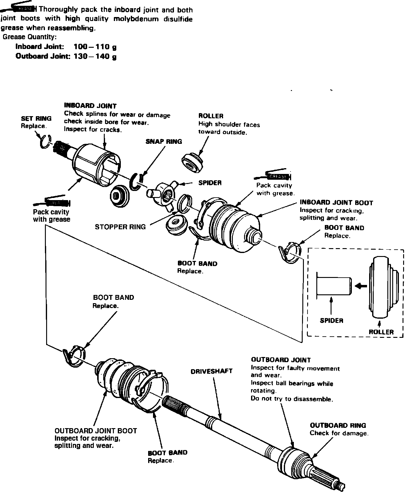
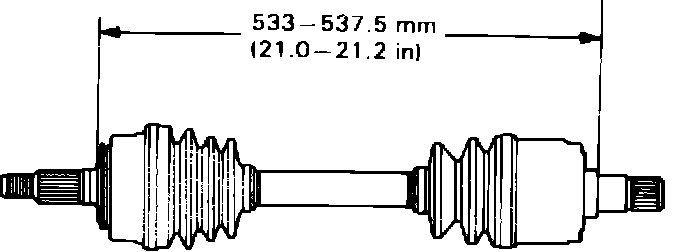

Disassembly and Assembly
Fig. 2 Exploded view of driveshaft assembly. Legend:

1. Disassemble driveshaft assembly referring to, Fig. 2. Mark rollers and roller grooves for assembly reference.
2. Assemble driveshaft assembly in the reverse order of disassembly, noting the following:
a. Pack bearings, joint boot cavity and both CV joints with suitable grease prior to installation.
b. Install rollers and bearing races on spider shafts, then position spider assembly into inboard CV joint. On Legend models, position rollers on spider with their high shoulders facing outward.
c. Avoid getting grease or oil on rubber components.
d. On Integra models, position new boot bands on small ends of boots so they are centered between protrusions at each end of driveshaft, then expand and contract boots until they return to normal shape and length.
Fig. 4 Driveshaft length adjustment. Legend:

e. On all models, adjust length of driveshafts to specifications, Fig. 4.
f. Install new boot bands on boots. Bend both sets of locking tabs, then lightly tap down doubled over portion of bands.
g. On Legend models, install new set ring into driveshaft groove, then position inboard end of driveshaft into differential. Ensure driveshaft locks in differential side gear groove and CV joint sub-axle bottoms in differential or intermediate shaft.